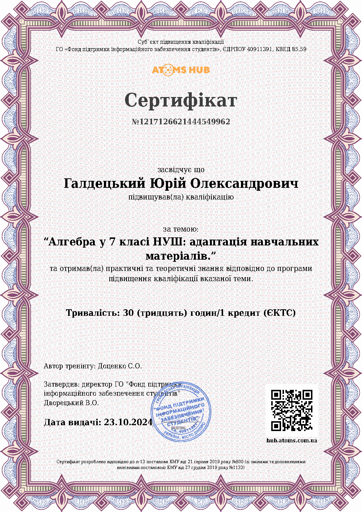
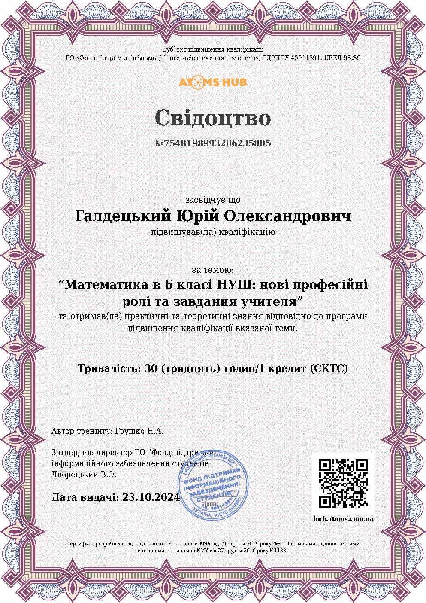
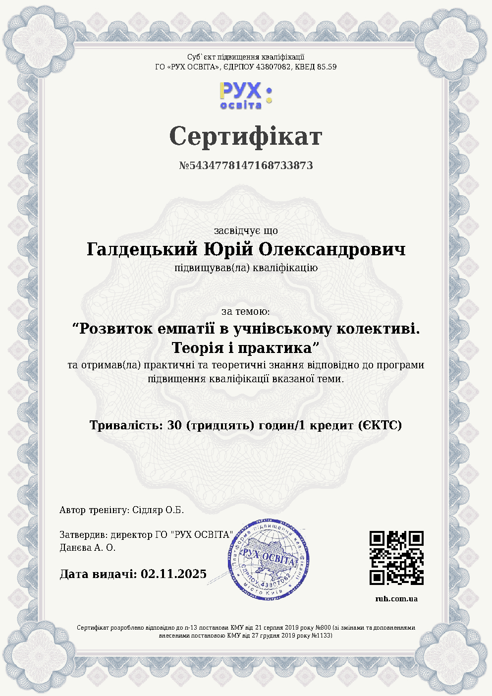
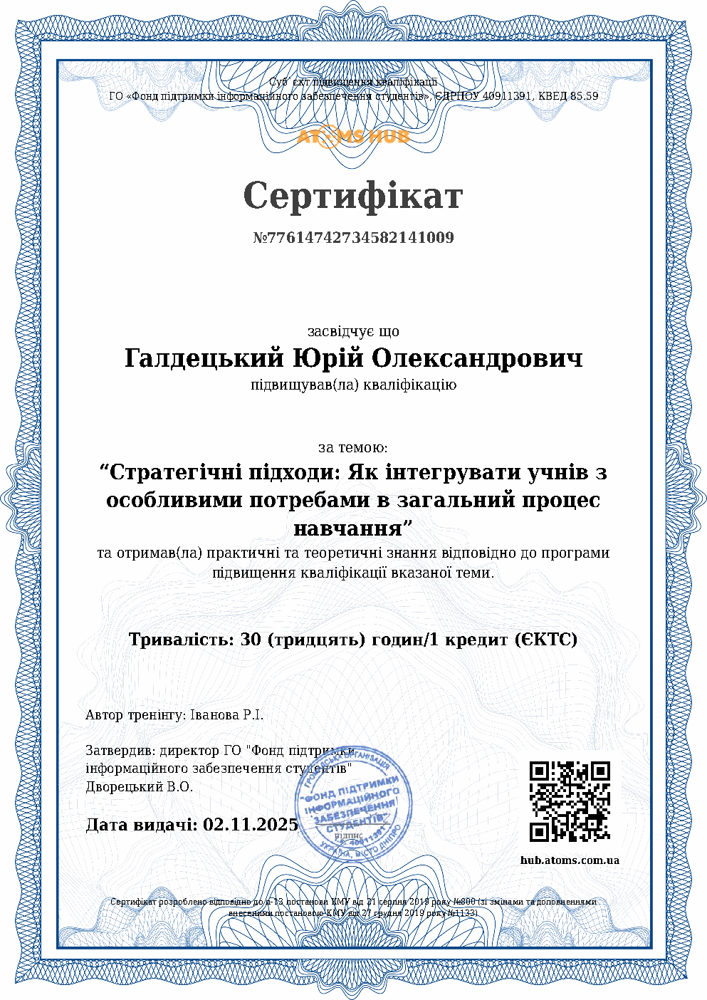
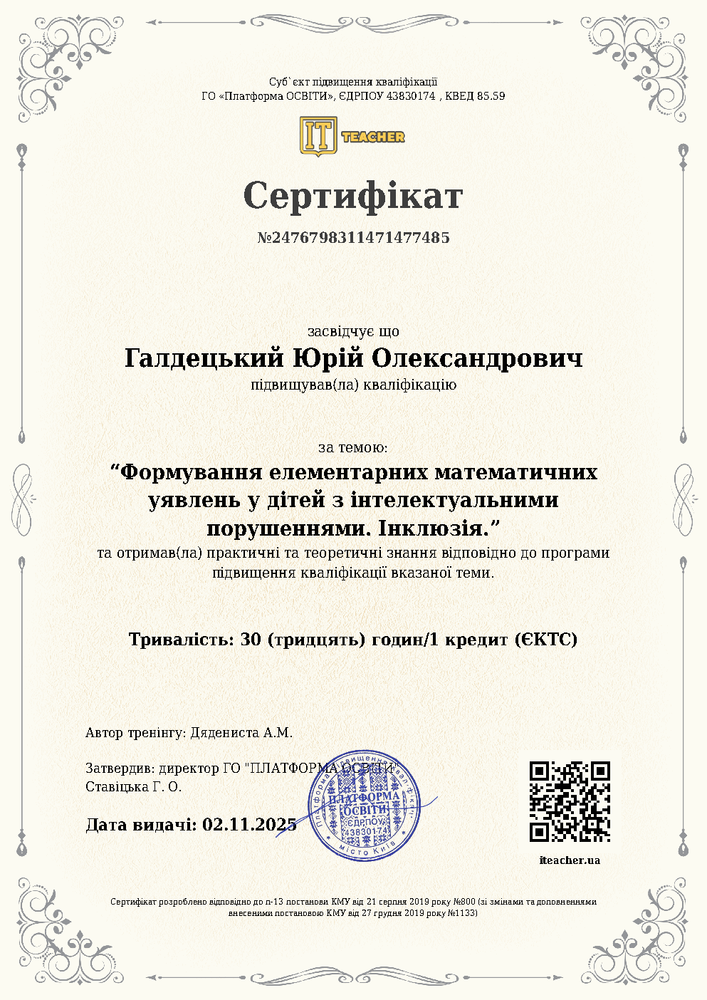
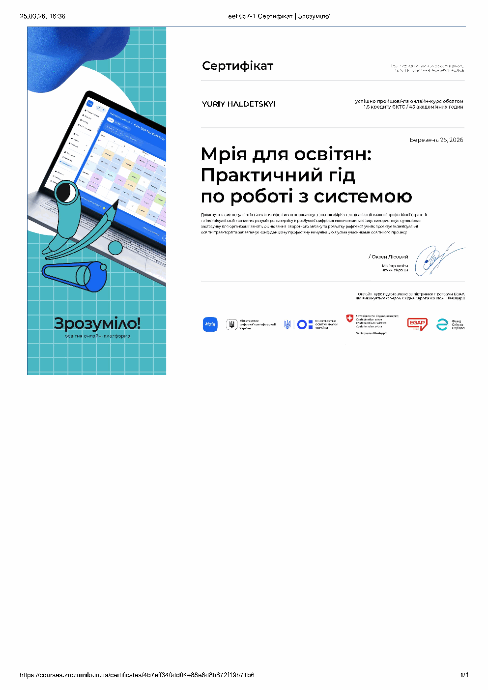

x²
Шкільна математика 🧩
Навчання для учнів від 5 класу: пояснення тем, домашні завдання, контрольні роботи та системне закриття прогалин.
Дізнатися про заняття →Математика для учнів 5 класу і старших
Хочеш опанувати математику всього за 20 годин? Тоді тобі сюди! Все складне стає зрозумілим! 🌟
Допомагаю закрити прогалини, підготуватися до НМТ, внутрішніх іспитів та вступу за кордоном. Заняття у Львові й онлайн.
Показники надані викладачем.
Перший урок допомагає визначити рівень, прогалини та реалістичний план роботи.
Навчання для учнів від 5 класу: пояснення тем, домашні завдання, контрольні роботи та системне закриття прогалин.
Дізнатися про заняття →Повторення програми, тематичні тренування, робота з тестовими форматами й авторськими workbook'ами.
Обговорити підготовку →Підготовка до внутрішніх випробувань коледжів та університетів в Україні.
Оцінити програму →Допомога зі шкільною програмою та вступними вимогами закладів Європи. Умови залежать від програми.
Надіслати вимоги →Я підбираю темп і матеріали під учня. Короткі правила допомагають пригадати метод, а практика показує, чи учень може застосувати його сам.
На уроці ми розбираємо логіку розв'язання, а не заучуємо послідовність дій. Якщо тема спирається на пропущену базу, повертаємося до неї та будуємо зв'язок між правилами.
Записатися на пробнеОбговорюємо ціль, поточні труднощі та формат навчання.
Знаходимо теми, які потребують повторення або нового пояснення.
Визначаємо послідовність тем і потрібний обсяг практики.
Працюємо з вправами, workbook'ами та завданнями під ціль учня.
Після кожного уроку дитина отримує PDF-дошку, на якій ми працювали.
Учень розуміє, що вже виходить і над чим ми працюватимемо далі.
У кожному зошиті є короткі правила, обмежені підказки та місце для самостійного розв'язання. Юрій створює матеріал під клас, тему, кількість завдань і потрібну складність.
Бот автоматично наповнює відкритий канал задачами, поясненнями, математичними фактами та навчальними дописами. Учні отримують додаткову практику між заняттями.
Відкрити математичний канал →Окремий інструмент для комунікації та відстеження навчального процесу.
Курси охоплюють сучасні програми, емпатію, адаптацію матеріалів та інклюзивне навчання.

Алгебра у 7 класі НУШАдаптація навчальних матеріалів
Математика у 6 класі НУШПрофесійні ролі вчителя
Психологія навчанняРозвиток емпатії в колективі
Інклюзивна освітаІнтеграція учнів у навчання
Математика й інклюзіяРобота з інтелектуальними порушеннями
Цифрові інструментиПрактичний гід із системи «Мрія»Там можна переглянути повідомлення та результати без переказів на сайті.
За даними викладача, його випускники вступали до цих університетів:
Оплата проходить наперед на офіційний рахунок ФОП.
10 занять — і ви на крок ближче до 12 балів!
45–60 хвилин. Обговорення цілей, труднощів і наступного плану.
Записатися60 хвилин. Шкільна програма, НМТ або внутрішні вступні іспити.
Записатися60 хвилин. Робота в невеликій групі зі спільним рівнем і метою.
Дізнатися про групиПідготовка за програмою закордонного закладу оцінюється після перегляду вимог.
Бонус нараховується після того, як друг відвідає щонайменше два заняття. Акція діє для всіх учнів.
Онлайн через Zoom або очно у Львові, район Наукової. Точну адресу учень отримує після запису.
Юрій проводить заняття українською мовою.
Заплановану відсутність потрібно повідомити більше ніж за 24 години. Тоді оплата переноситься. Якщо учень знав про відсутність, але не повідомив вчасно, оплата списується.
Хвороба, раптові проблеми зі зв'язком, аварійне відключення електроенергії, сімейна або безпекова ситуація дозволяють перенести урок менш ніж за 24 години. Юрій розглядає спірні випадки окремо.
Учень оплачує заняття наперед на офіційний рахунок ФОП.
Перший крок 👋
Напишіть клас, тему або іспит. Юрій відповість у Telegram і запропонує формат заняття.
Написати в Telegram